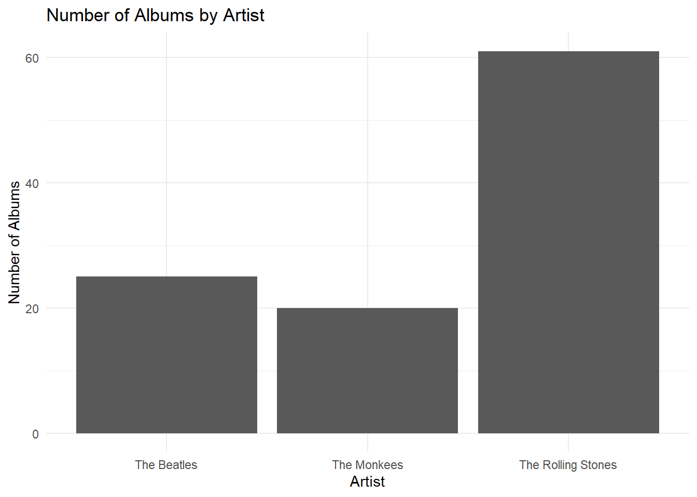
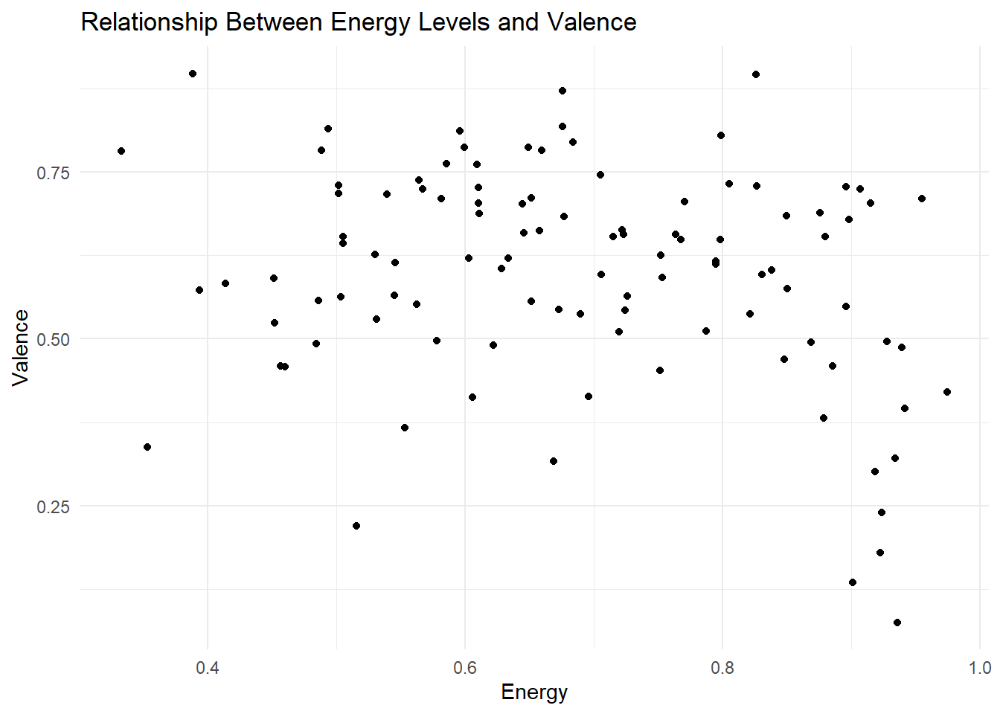
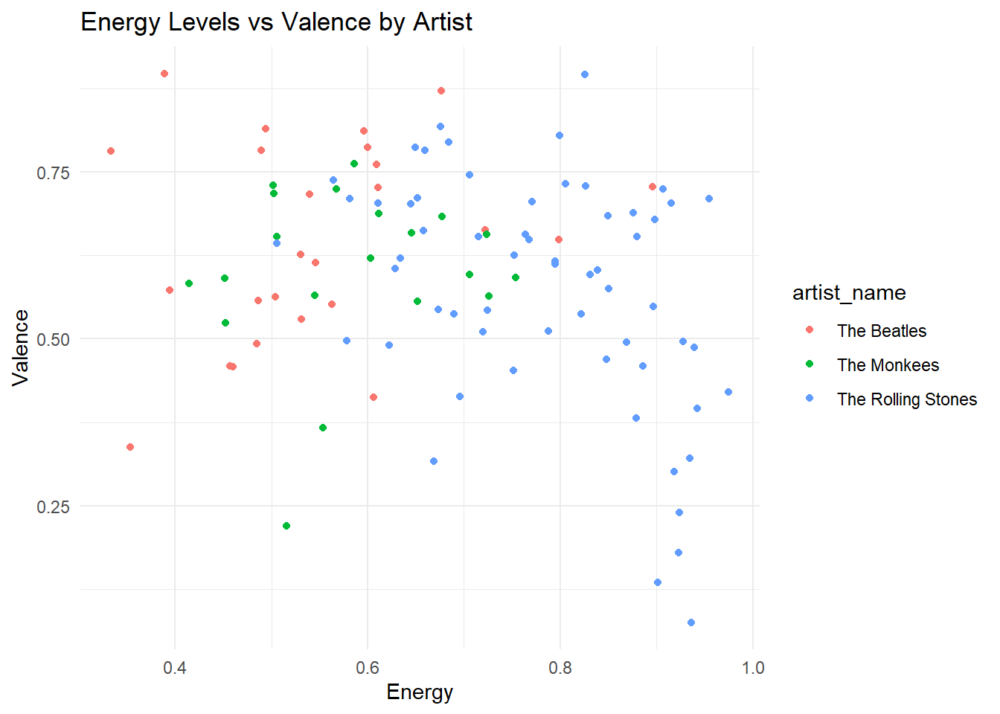
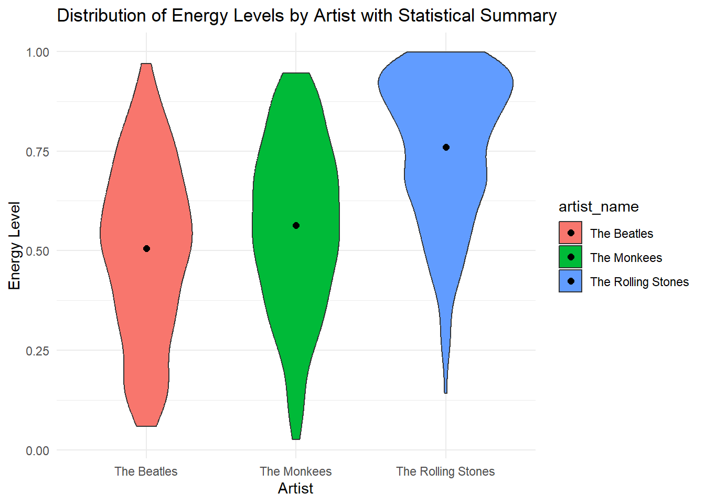
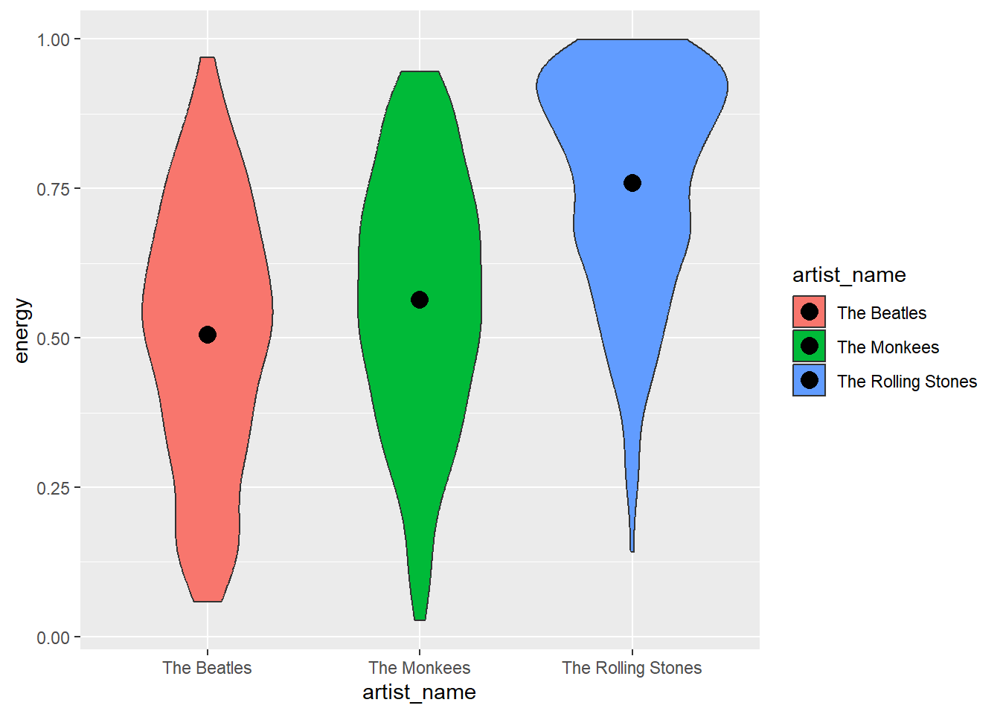

# Load the data from the R data file
load("music_data.rda")CS 123 Teaching Demo
Learning Objectives:
Who had more energy The Rolling Stones, The Beatles and The Monkees?
- ggplot: Layered Approach
- Description: ggplot builds plots using a layered approach. Each layer adds a new element to the plot, making complex visualizations achievable through simple building blocks.
- Geom: Visual Representation
- Description: Geoms (geometric objects) are the heart of a ggplot plot. They provide the visual representations of data.
- Examples:
- Points for scatter plots
- Boxplots and Violin Plots for showing distributions and comparing groups
- Bars for bar charts
- Stat: Statistical Transformations
- Description: Statistical transformations (Stats) process your data to create summaries or perform calculations.
- Key Concepts:
- Counting data points
- Summarizing datasets
- Guide: Annotations and Legends
- Description: Guides include all the necessary annotations to make a plot readable and informative.
- Elements:
- Legends to explain scales
- Axis labels for clarity
- Title and subtitles for context
Review of the Extract-Transform (E-T) Process
How did we get this data?
Overview: We extracted data using the Spotify API and transformed it using various dplyr functions. Link to Extraction and Transformation Process. Additionally, here’s a reference to research presented at a conference of Extraction Transformation Visualization (ETV) a teaching data science technique.
Illustration with Data:
Bind Rows: Combiningall_tracks_df. See this section of the notes for more details.Filter Function: Filtering data inall_tracks_cleaned_df. Refer to this section of the notes for additional information.Group By and Summarize: Demonstrating these processes withalbum_info_dfandartist_overview_df. Further details can be found in this section of the notes.
0. Lets Visualize
library(ggplot2)Warning: package 'ggplot2' was built under R version 4.3.1The ggplot2 package in R is a powerful and flexible system for creating data visualizations.
Built upon the principles of the Grammar of Graphics, it allows users to construct plots by layering components systematically.
ggplot2 is renowned for its ability to handle complex visualization tasks with ease, offering a wide range of plot types and customization options.
1. Understanding Geoms
Definition: Geoms (geometric objects) are the visual representations of data in ggplot2. Examples include points, lines, and bars.
Illustration with Data:
Investigating Count Data - geom_bar
Which group had the most albums?
Type of Data: One or more categorical variables (e.g., “Artist”)
We’ll create a bar plot using geom_bar() with the artist_overview_df data frame to visualize the count of albums by each artist group.
# Bar plot to show the number of albums per artist
ggplot(artist_overview_df, aes(x = artist_name, y = Number_of_Albums)) +
geom_bar(stat = 'identity') +
theme_minimal() +
labs(title = "Number of Albums by Artist",
x = "Artist",
y = "Number of Albums")
This visualization will help us see which artist group released the most albums.
Investigating the Distribution - geom_violin
What were the energy levels of each group?
Type of Data: One categorical variable (Artist) and one numeric variable (Energy)
Using geom_violin() with the all_tracks_cleaned_df, we’ll create a violin plot to visualize the distribution of energy levels across different artist groups.
# Violin plot to show the distribution of energy levels per artist
ggplot(all_tracks_cleaned_df, aes(x = artist_name, y = energy, fill = artist_name)) +
geom_violin() +
theme_minimal() +
labs(title = "Distribution of Energy Levels by Artist",
x = "Artist",
y = "Energy Level")
A violin plot is chosen here because it not only shows the distribution but also the density of the data points, giving a clearer picture than a boxplot.
Investigating a Relationship - geom_point
What is the relationship between energy levels and valence across groups?
First, we’ll create a scatter plot using geom_point() with album_info_df to explore the relationship between energy levels and valence without specifying artists.
# Scatter plot for energy levels vs valence
ggplot(album_info_df, aes(x = Energy, y = Valence)) +
geom_point() +
theme_minimal() +
labs(title = "Relationship Between Energy Levels and Valence",
x = "Energy",
y = "Valence")
You can investigate more geoms here.
In Class Practice
Turn this into a question in which the student is asked to use color = artist_name ““” Next, we’ll add the artist specification to the plot for a more detailed analysis.
# Scatter plot with artist specification
ggplot(album_info_df, aes(x = Energy, y = Valence, color = artist_name)) +
geom_point() +
theme_minimal() +
labs(title = "Energy Levels vs Valence by Artist",
x = "Energy",
y = "Valence")
This approach allows us to first observe the general trend and then delve deeper into how this relationship might differ across different artist groups. ““”
2. Exploring Stats
Definition: In ggplot2, Stats (statistical transformations) are fundamental components that transform and summarize data.
These transformations include basic tasks like counting occurrences, to more complex operations like calculating means or medians, making them crucial for data analysis and interpretation.
Illustration with Data:
We will use
stat_summary()in conjunction withgeom_violin()to enhance our violin plot. By applyingstat_summary(), we can overlay summary statistics, such as mean or median, on the violin plot created fromall_tracks_cleaned_df.This approach not only visualizes the distribution of energy levels across different artist groups but also marks key statistical indicators for more insightful data interpretation.
# Enhanced Violin plot with summary statistics for energy levels per artist
ggplot(all_tracks_cleaned_df, aes(x = artist_name, y = energy, fill = artist_name)) +
geom_violin() +
stat_summary(fun = mean, geom = "point", shape = 20, size = 3, color = "black") +
theme_minimal() +
labs(title = "Distribution of Energy Levels by Artist with Statistical Summary",
x = "Artist",
y = "Energy Level")
In this code snippet,
stat_summary()is used to plot the mean energy levels as points on the violin plot.The
meanfunction calculates the average energy level for each artist, and the resulting point is plotted on top of the corresponding violin plot.This enhancement provides a clear visual indicator of the central tendency of the energy distribution for each artist, adding depth to our data analysis.
In Class Practice
This one should Include Add the Frequency on top of each bar geom bar
3. Guide: Legends and Annotations
Definition: In ggplot2, guides are critical elements that enhance the interpretability of a plot. They include legends, axes labels, titles, and other annotations, serving as navigational tools that provide context and improve readability.
Guides help in making the plots self-explanatory by clearly indicating what each visual element represents.
Illustration with Data:
To demonstrate the importance of guides, we will enhance a scatter plot created from
album_info_df.We’ll focus on customizing the legend and adding meaningful axes labels and a descriptive title.
This will help viewers quickly understand the relationship between energy levels and valence in the dataset.
# Enhanced scatter plot with customized guides
ggplot(album_info_df, aes(x = Energy, y = Valence, color = artist_name)) +
geom_point() +
scale_color_manual(values = c("blue", "red", "green")) +
labs(title = "Relationship Between Energy Levels and Valence by Artist",
subtitle = "Visualizing data from 'album_info_df'",
x = "Energy",
y = "Valence",
color = "Artist Group") +
theme(legend.position = "bottom")
In this code snippet:
aes(color = artist_name)is used to differentiate data points by artist, adding a color legend to the plot.scale_color_manual()allows us to manually specify the colors used in the plot, enhancing visual appeal and clarity.The
labs()function is used to add a title, subtitle, and custom labels for axes and the legend, providing context to the plot.theme(legend.position = "bottom")adjusts the legend’s position for better layout and readability.This enhanced section provides an in-depth understanding of the role of guides in ggplot2 and illustrates their application with a practical example.
By customizing legends and annotations, we can significantly improve the effectiveness of our data visualizations, making them more informative and accessible to the audience.
In Class Practice
Conclusion
Today’s exploration of the ggplot2 package in R has taken us through the intricacies of Geoms, Stats, and Guides. We’ve utilized all_tracks_cleaned_df, album_info_df, and artist_overview_df to demonstrate the creation of compelling visualizations, from basic bar charts to insightful violin and scatter plots.
- Geoms showed the diverse ways data can be visually represented.
- Stats added a layer of depth by integrating statistical summaries.
- Guides enhanced our plots with clear legends and annotations, making them informative and accessible.
This session aimed to not only broaden your understanding of ggplot2 but also to inspire its application in your data storytelling endeavors. Thank you for your engagement, and I encourage you to continue exploring the vast potential of data visualization.
Question 1: Geoms
Prompt: Using the mtcars dataset, create a ggplot2 scatter plot (geom_point) to visualize the relationship between mpg (miles per gallon) and hp (horsepower). Assign your plot to the variable p1.
Solution:
p1 <- ggplot(mtcars, aes(x = mpg, y = hp)) +
geom_point()gradethis Code:
# grade_this_code()(
# pass_if(~ identical(.result, p1),
# "Excellent work! Your scatter plot correctly visualizes the relationship between mpg and hp."),
# fail_if(~ !inherits(.result, "ggplot"),
# "Make sure you are using ggplot2 for plotting."),
# fail("Your plot does not match the expected output. Check your aes() mappings.")
# )Question 2: stat_summary
Prompt: Create a ggplot2 visualization using the mtcars dataset that displays the average mpg for each cylinder group (cyl). Use geom_bar() and stat_summary() to achieve this. Store your plot in the variable p2.
Solution:
p2 <- ggplot(mtcars, aes(x = factor(cyl))) +
geom_bar(stat = "summary", fun = mean)gradethis Code:
# grade_this_code()(
# pass_if(~ identical(.result, p2),
# "Well done! Your plot correctly shows the average mpg for each cylinder group."),
# fail_if(~ !("summary" %in% sapply(.result$layers, function(x) x$stat)),
# "Remember to use stat='summary' in geom_bar."),
# fail("Your plot doesn't seem to be correct. Ensure you're using the mean function for stat_summary.")
# )Question 3: Labels
Prompt: Using the mtcars dataset, create a ggplot2 scatter plot of mpg vs wt (weight). Add labels for the x-axis (“Miles per Gallon”), y-axis (“Weight (1000 lbs)”), and the plot title (“MPG vs Weight”). Save this plot as p3.
Solution:
p3 <- ggplot(mtcars, aes(x = mpg, y = wt)) +
geom_point() +
labs(title = "MPG vs Weight", x = "Miles per Gallon", y = "Weight (1000 lbs)")gradethis Code:
# grade_this_code()(
# pass_if(~ identical(.result, p3),
# "Great job! Your labels are correctly added to the scatter plot."),
# fail_if(~ any(c("Miles per Gallon", "Weight (1000 lbs)", "MPG vs Weight") %in% c(.result$labels$title, .result$labels$x, .result$labels$y)),
# "Check if you've added all the required labels correctly."),
# fail("There seems to be an issue with your plot. Review the labels and try again.")
# )